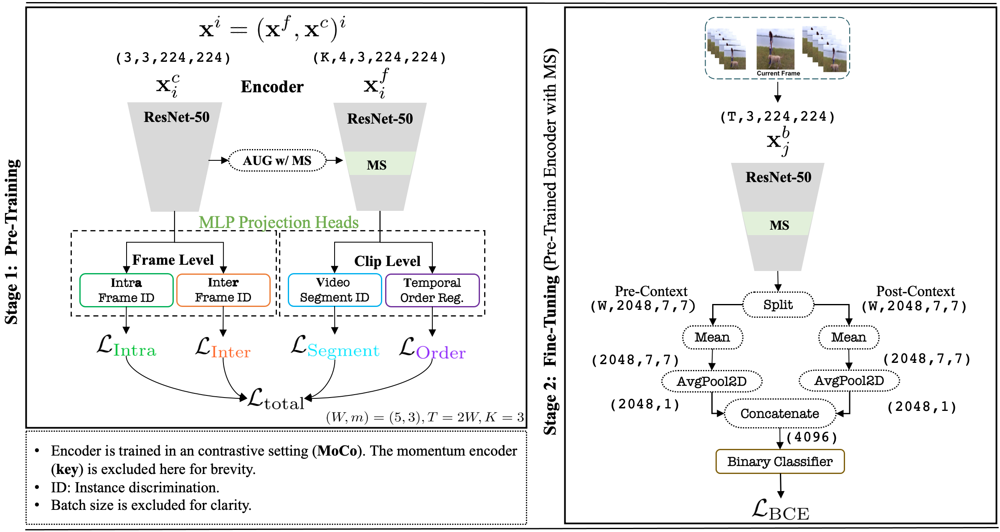

可借用的是“把位移估计做成可微层、再用无标注视频预训练”这条路，让边界检测器拿到对运动敏感的特征；代价是整条链路非因果，判定候选帧时要用它之后的帧，预训练域也仍是人类活动视频。
- 最小可复用件
- 插在骨干
conv3_x之后的 MotionSqueeze 层：相关层加 soft-argmax 出位移图，depthwise 卷积转成运动特征后残差加回主干。 - 主要风险
- 非因果中心窗口：微调输入覆盖候选帧前后两侧，在线使用时每个边界都要等一个窗口才能确认。
- 复现门槛
- ResNet-50 级别骨干、无标注视频预训练、带逐帧边界标签的微调集；不需要光流预处理，也不需要离线光流管线。
1. 核心摘要
GEBD 要在不预设类别的前提下找出人自然感到“事件切换”的时刻。既有方案一类靠动作分类预训练的骨干加边界头，特征被类别标签牵制；一类堆叠多尺度、级联或集成结构，把指标推高却说不清特征里有没有运动。作者的判断是问题在表征层：编码器若对帧间位移不敏感，后级再复杂也只能在静态外观上判别。做法是把可微的 MotionSqueeze 插进 ResNet-50 的 conv3_x 之后，在 MoCo 风格框架下用四项判别任务预训练——帧内与帧间实例判别、片段级实例判别、片段顺序正则；位移估计全程可微，梯度能回到运动分支，因此无需显式运动 pretext task。下游只加一个二分类头，在 Kinetics-GEBD 与 TAPOS 上微调。判定是：这是候选生成的上游供给件，本身不产生事件，价值在于让后续检测器对边界更敏感。
2. 事件流水线定位
严格说它在候选生成的上游：交付物是预训练编码器加逐帧二分类头，输出“这一帧是不是边界”，不给区间，也不给类别。它改变的是更靠底层的事——特征空间里帧间位移是否可读。上游假设能离线拿到整段视频做预训练；下游假设是换掉骨干权重、保留自己的判定逻辑，就能吃到这份运动敏感性。
| 项 | 内容 |
|---|---|
| 输入 | 预训练：视频内随机帧与随机片段，无标注。微调：以候选帧为中心、前后各 \(W=5\) 个采样点、步长 \(m=3\) 的 10 帧窗口 |
| 输出 | 每个候选帧一个边界概率；经阈值与时间窗聚合后得到离散时刻，无区间、无类别 |
| 交给下游 | 一个对运动敏感、可直接微调的 ResNet-50 权重，以及“前后上下文各自池化再拼接”的极轻边界头 |
3. 问题与动机
前人方法的失效模式很具体。监督式分类骨干（论文以 PC 为代表）把动作分类的判别方向原样搬来做边界二分类，而边界的判据往往正交于类别：杯口从空到满、夹爪从开到合，画面变化很大但类别标签不变，特征在这一方向上没有被人为拉开。
显式运动方法的问题不在精度而在接口。光流通常在像素域离线算好，不参与优化：编码器与算子各自为政，光流在弱纹理、快速平移、遮挡处的误差无法被训练修正，管线也没法端到端调，改进只能换更强的光流模型。
复杂管线把指标做高了，但回答的是“如何组合已有信号”，没回答“信号里有没有运动”，换域时没有可借力的表征基础。朴素自监督同样不够：把每帧或每段当实例做判别，学到的多是场景身份与静态外观，相机缓慢平移或物体被逐渐移出视野时，相邻帧在特征上几乎重合，慢变状态推进与自运动难以区分。作者要的是既无类别偏置、又对帧间位移有反应的表征。
4. 方法拆解

Figure 1：Stage 1 用帧级与片段级四个投影头学习运动表征；Stage 2 用候选帧两侧上下文进行边界二分类。
4.1 输入与时间表征
预训练同时喂两路输入，共享 ResNet-50 但用途不同。帧级分支取三帧、单帧 \(3\times 224\times 224\)；片段级分支把视频划成 \(K=3\) 段等长区间，每段采两个 4 帧片段，张量 \((K,4,3,224,224)\)。MotionSqueeze 只挂在片段级分支上，帧级分支保持纯 2D，空间多样性与时间多样性因此由两路分担。骨干在残差块内插 TSM 近似时序建模，MotionSqueeze 落在 conv3_x 之后、约 \(28\times 28\) 处：再低丢局部位移，再高则相关层开销陡增。
4.2 关键机制
三步位移估计。对相邻特征图 \(F(t)\)、\(F(t+1)\)，先在最大位移 \([-l,l]\)、邻域 \(P=2l+1\) 内算相关张量；再用 kernel soft-argmax 压成 \(H\times W\times 2\) 位移图，同时池化最大相关得到 \(H\times W\times 1\) 置信图，拼成 3 通道；最后经四个 depthwise separable 卷积映射为同通道运动特征 \(M(t)\)，以 \(F'(t)=F(t)+M(t)\) 残差写回主干。
可微性是关键。相关层、soft-argmax、深度可分离卷积全部可导，对比损失的梯度能回到“位移是怎么估出来的”。换成离线光流，位移在进网络前就冻结，算子不会随任务调整；位移一旦可微，编码器就有动机把它调到对判别有用的精度。作者没有声称恢复真实光流，优化的是“哪部分位移对区分时间序列有用”。
代理任务是判别式而非生成式：没有帧预测、重建或解码器。四项损失等权相加，共享 MoCo-V2 风格的 InfoNCE。\(L_{\mathrm{Intra}}\) 以同帧两种增强为正样本、负样本取同一视频内的其他帧，迫使同视频不同时刻可区分；\(L_{\mathrm{Inter}}\) 把同视频相邻帧都当正样本、负样本来自其他视频，保留连贯动作内的细粒度时间结构；\(L_{\mathrm{Segment}}\) 对每个 clip 的帧特征取平均得片段嵌入，按片段做实例判别；\(L_{\mathrm{Order}}\) 打乱片段顺序后要求判别原序。顺序判别是运动特征被间接监督的入口：判断先后，稳定线索只有帧间位移，而 MotionSqueeze 正好提供了可微的位移通路。
4.3 输出与在线边界
预训练与下游的接口很窄。微调时把含 MotionSqueeze 的 ResNet-50 整体接上：10 帧窗口（两侧各 \(W=5\) 个采样点、步长 \(m=3\)）按候选帧切成 pre/post 两段 \((W,2048,7,7)\)，各自池化成 2048 维、拼接为 4096 维后过一层二分类器，损失为 BCE；标签经高斯平滑成软标签，吸收多标注者的容忍差异。
在线设定：该方法非因果。微调输入覆盖候选帧前后两侧，判定第 \(t\) 帧时已读到其后的帧；预训练也从整段视频随机取帧与片段。历史长度为两侧各 5 个采样点、间隔 3 帧。论文未给单侧窗口、流式推理或延迟数据，在线可用性未在已核验的公开材料中确认。延迟来源因此不是网络前向，而是“必须等右侧帧到齐”。
5. 证据与实验
实验用两个数据集：Kinetics-GEBD 做预训练与微调，TAPOS 只做微调以检验跨域。指标为 F1，按 Rel.Dis 阈值 0.05 至 0.5、步长 0.05 报告并给平均值，概率低于 0.5 的提案不计入。表 1、表 2 是横向对比，表 3 是组件消融，逐级加入片段级改造、MotionSqueeze 与软标签。
“边界敏感”被三种方式验证，都不是空口宣称。其一是消融：表 3 中从 VCLR 到加入 MotionSqueeze 的一步增益最大，其上再加软标签提升较小，说明收益归因于可学习的运动模块，而非“换了自监督”的名头。其二是冻结编码器的线性评估：论文写到线性评估在 GEBD 上表现很差、必须端到端微调，这条负面结果支持“增益来自表征可被重塑”而非线性可分性变好；论文只给结论，未报告数值。其三是图 3 的运动置信度可视化：模型只在 Kinetics-GEBD 上预训练，置信图在未参与预训练的 TAPOS 片段上仍落在运动区域，作者据此论证 MotionSqueeze 学到的是通用运动特征。
与监督训练的对比是受控的：同一 ResNet-50 骨干、同一输入构造、同一指标下的 Supervised PC 基线；与自监督 SOTA 的比较受各自输入形式影响，不算严格受控。具体 F1 数值本页不复述（底稿未核验到小数位），需要精确排名请查原文表 1 至表 3；单帧延迟、预训练算力与机器人数据上的迁移结果同样未在已核验的公开材料中确认。论文自陈的局限是：MotionSqueeze 作用于特征图，学到的是全局运动，而 GEBD 中并非所有运动都对应边界。
6. 优点、局限与 VLA 适配
可迁移
MotionSqueeze 与骨干解耦：中间层只要还是 \(H\times W\times C\)，就能插在任意 2D 骨干的某个 stage 后。四项判别任务不需标注，机器人自采长视频可直接预训练。下游“两侧上下文各自池化再拼接”的头极轻，输出是概率而非区间，正好匹配“要不要在此刻写一条记忆”这个二元决策。
不成立的前提
边界标签来自人观看视频的感知，VLA 关心的是任务状态是否转移，两者在“缓慢接近但尚未接触”这类片段上答案不同。预训练域是 Kinetics 人类活动，视角接近人眼、相机稳定；腕部相机则是近景、强自运动、弱纹理、频繁遮挡，全局位移会压过抓取这类局部毫米级变化。
预训练成本要先算清。MoCo 风格训练需要大 batch、负样本队列与动量编码器，加上片段级多 clip 采样，吞吐远高于普通监督训练；论文受算力限制只在 Kinetics-GEBD 上预训练。对机器人团队更现实的问题是：值不值得为边界重训编码器？若本体已能以远高于视频帧率的频率给出关节角、夹爪开合与接触力，“运动”在最需要的尺度上就有更便宜更准的测量，从像素重建运动的边际收益主要落在抑制自运动伪运动、捕捉接触前兆这两件事上。
次序应是先门控、后重训。用现成权重跑一遍自有数据，把本体信号（夹爪跳变、力突变、末端速度过零）当门控，只在门控打开时让视觉概率参与判断；若漏检主要来自腕部视角伪运动，再重训，且优先只训 MotionSqueeze 与头部、冻结骨干。延迟上，MotionSqueeze 的开销集中在 \(28\times 28\) 相关层，真正的问题是右侧未来帧；最小改造是保留双侧窗口但只用于离线整理历史，在线候选仍由本体信号触发。
7. 落地清单
- 冻结官方权重，在自有机器人视频上以 \(W=5\)、\(m=3\) 复现微调与推理，先把预测时刻与人工标注对齐，量出域差异再决定是否投入预训练。
- 把 MotionSqueeze 插到自研 2D 骨干的
conv3之后，只训该模块与边界头，对比“有/无该层”的 F1 与伪运动误检率。 - 复现四项判别损失时保持等权，并单独记录每项损失曲线，确认顺序正则确实是运动分支获得监督的来源。
- 接入本体信号门控：仅在夹爪开合与力突变窗口内放行视觉边界概率，并把“本体触发但视觉否决”的样本单独留存做误差分析。
- 把中心窗口改为单侧 \([t-2W, t]\) 重训一版，记录边界真实时刻与确认时刻之差，作为记忆写入延迟指标上报。
来源：arXiv abs 页 arXiv:2210.05574（v2，2022-10-12，WACV 2023）；CVF 论文页 WACV 2023 open access；官方代码 rayush7/motion_ssl_gebd。机制描述对应原文第 3、4 节与图 1，可视化对应图 3，消融对应表 3，横向对比对应表 1、表 2。
相关页面：FlowGEBD · 低成本候选生成 · OAT · 在线 proposal · 返回总站